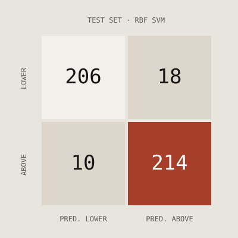

Predicting above-median wine purchasers
DESE40009 Data Science · Individual analysis · 2026
In our group, each member tested a different classification method. I built and tuned a support vector machine that flags customers likely to spend above the median on wine, using demographics and purchase channels only, so the model never sees the spending it predicts.
- Accuracy
- 93.8%
- Recall
- 95.5%
- ROC-AUC
- 0.980